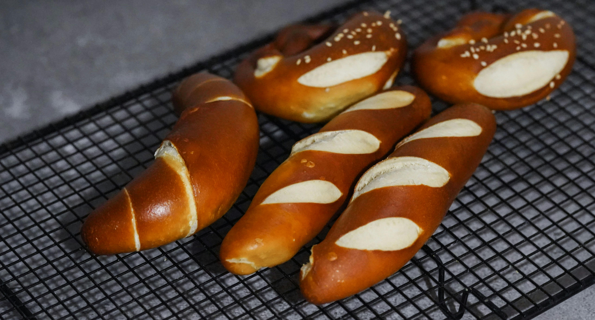

Bar Bites
-
Hop Salt Pretzels
Soft or crispy pretzels dusted with a hoppy salt blend and served with beer cheese.
$9
-
IPA-Battered Onion Rings
Thick-cut onions coated in a crispy IPA-infused batter, served with spicy aioli.
$7
-
Spicy Maple Bacon Nuts
A mix of roasted almonds, cashews, and peanuts glazed with maple syrup, cayenne, and crispy bacon bits.
$7
-
Citrus Chili Popcorn
Freshly popped corn tossed with citrus zest, smoked paprika, and a hint of chili powder.
$8
-
Gochujang Glazed Wings
Chicken wings coated in a sticky gochujang (Korean chili paste) sauce, topped with sesame seeds and scallions.
$13
-
Truffle Parmesan Fries
Crispy fries tossed in truffle oil, grated Parmesan, and fresh herbs.
$11
Famous IPAs
-
Foggy Anvil Hazy IPA – Portland, OR
A juicy, hop-forward IPA brewed with Citra and Mosaic hops. Tasting Notes: Bursting with tropical fruit flavors like mango and pineapple, with a smooth, creamy mouthfeel and a slightly dank finish.
$5
-
Red Rock Ridge West Coast IPA – San Diego, CA
A bold, resinous IPA with a classic West Coast bite. Tasting Notes: Pine and grapefruit dominate the aroma, followed by a crisp bitterness and a dry finish with hints of caramel malt.
$4
-
Thunder River Double IPA – Boulder, CO
A high-ABV hop bomb packed with Simcoe and Chinook hops. Tasting Notes: Notes of ripe citrus, pine resin, and a touch of honey, balanced with a sturdy malt backbone.
$7
-
Northern Lights Cold IPA – Anchorage, AK
A clean, crisp IPA fermented at colder temperatures for a smooth finish. Tasting Notes: Light-bodied with floral and lemon zest aromas, followed by a crisp, dry bitterness that lingers.
$5
-
Gilded Grove English IPA – Manchester, UK
A malt-forward IPA inspired by traditional British brewing methods. Tasting Notes: Earthy and herbal with hints of toffee and toasted biscuit, balanced by a gentle bitterness from East Kent Goldings hops.
$6
-
Sunset Vortex Blood Orange IPA – Miami, FL
A fruit-infused IPA that blends citrusy hops with real blood orange puree. Tasting Notes: Zesty orange, hints of tangerine, and a bright, juicy sweetness that fades into a mild bitterness.
$3
County Wines

-
Obsidian Crest Cabernet Sauvignon – Napa Valley, CA
A bold, full-bodied Cabernet aged in American oak barrels. Tasting Notes: Dark cherry, blackberry, and cassis with notes of vanilla, tobacco, and a long, velvety finish.
$9 Glass / $45 Bottle
-
Midnight Ember Malbec – Mendoza, Argentina
A rich and spicy Malbec grown in the high-altitude vineyards of the Andes. Tasting Notes: Ripe plum, black pepper, and dark chocolate with a smooth tannic structure and a hint of smoked oak.
$12 Glass / $60 Bottle
-
Velvet Hollow Pinot Noir – Willamette Valley, OR
A delicate, silky Pinot Noir showcasing the cool climate of Oregon. Tasting Notes: Red cherry, raspberry, and a touch of forest floor earthiness, with soft tannins and a lingering finish.
$11 Glass / $55 Bottle
-
Golden Shore Chardonnay – Sonoma Coast, CA
A lightly oaked Chardonnay with a balance of fruit and minerality. Tasting Notes: Ripe pear, baked apple, and toasted vanilla with a creamy mouthfeel and a crisp, citrusy finish.
$8 Glass / $40 Bottle
-
Alpine Breeze Riesling – Mosel, Germany
A vibrant, off-dry Riesling with bright acidity and floral aromatics. Tasting Notes: Honeysuckle, green apple, and lime zest with a refreshing, slightly sweet finish.
$11 Glass / $55 Bottle
-
Ocean Mist Sauvignon Blanc – Marlborough, New Zealand
A zippy, aromatic Sauvignon Blanc with classic New Zealand character. Tasting Notes: Passion fruit, gooseberry, and fresh-cut grass with a zesty, mouthwatering acidity.
$13 Glass / $65 Bottle
Craft Cocktails

-
Midnight Mirage
Tasting Notes: Bold and smooth, with deep coffee richness balanced by a hint of sweetness and citrus spice.
$10
-
Citrus Ember
Smoky and tangy with a juicy citrus bite, rounded out by a touch of sweetness and a lingering warmth.
$14
-
Velvet Orchard
Light and floral with a crisp effervescence, offering a delicate balance of botanicals and citrus.
$15
-
Spiced Solstice
Warming and aromatic with notes of spiced tea, caramel, and a hint of citrus brightness.
$14
-
High Tide Cooler
Refreshing and tropical with a smooth, hydrating finish and a hint of herbal freshness.
$13
-
Blackberry Bramble Smash
Rich and fruity with a spicy rye backbone, balanced by bright citrus and a touch of herbal complexity.
$11